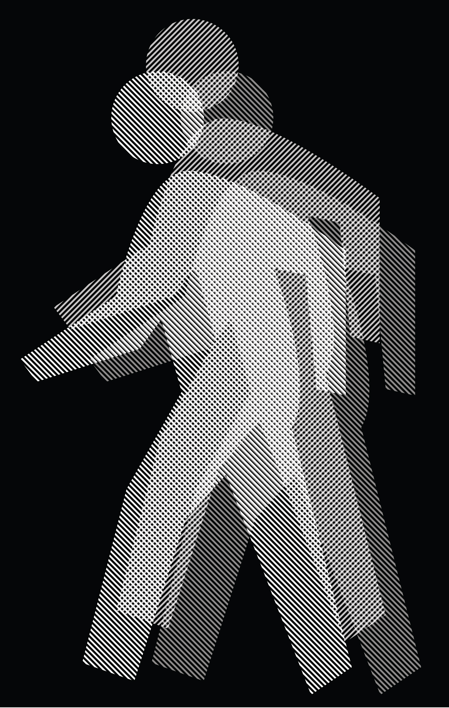
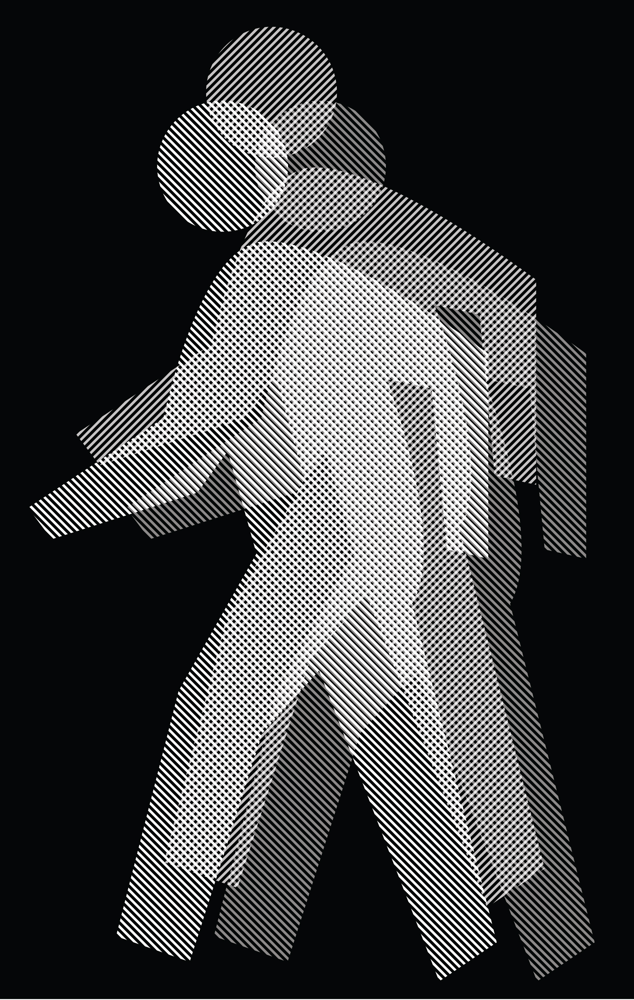

production design
menu redesign
for cafe de casa, never submitted

magazine spread
mock mag spread about graphic designer Reza Abedini
album cover redesign
mock redesign of 'Time Traveler' album by gum.mp3 (F.K.A Dirty Bird)

book cover redesign
i wonder if Patrick Bateman would like it
flyer for friend's concert
submitted, wasn't used
mock movie poster
based on The Art of Peer Pressure from Kendrick Lamar's 2012 album 'Good Kid M.A.A.D City'
typography poster
baskerville typeface informational poster
2D design
grdn logo
wallpaper experiment

dog days
clock design made in honor of my late dog Bubba and his little brother Zeus
between time
geometric vs organic
winnie & piglet
made entirely of manipulated type
 

lines series
experimenting with lines and people
typography thing
keys made of keys, break broken